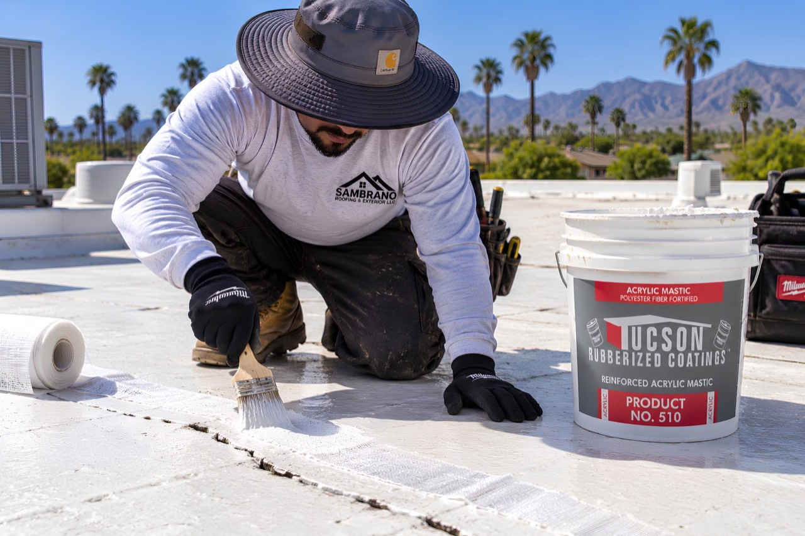
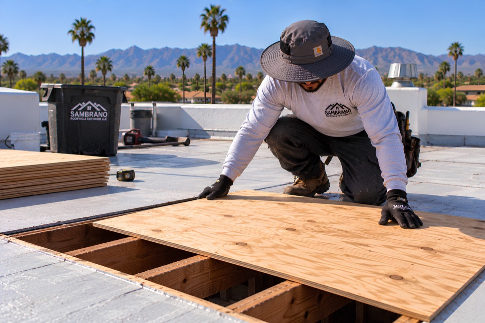

Tile, shingle, and flat roofs each fail differently. We inspect first to understand what's actually happening, then recommend a repair scope that matches the real problem — not the largest possible job.
Roof damage isn't one thing. A single damaged spot on an otherwise sound roof is a different situation than deterioration spread across the whole surface — and the right response is different too. We inspect before we recommend anything, so the scope actually matches what's found.
A single damaged area on an otherwise sound roof can often be addressed with a targeted repair rather than a larger project.
Damage spread across multiple areas, or repeated failures in the same spot, is a different situation and may point toward a larger scope of work.
Water staining, soft decking, or deteriorated underlayment aren't always visible until the surface is opened up during inspection or repair.
Southern Arizona's climate puts specific, repeated stress on a roof over time. None of these guarantee damage on their own, but they're what we're looking for during an inspection.
Constant, intense sun exposure degrades roofing materials, coatings, and sealants over time, particularly on flat and low-slope surfaces.
Tucson's monsoon season can drive rain into transitions, penetrations, and already-damaged areas that stay dry the rest of the year.
Older roofing systems, and areas that have already been patched more than once, are more likely to need a closer look during inspection.
The decking — plywood or OSB — underneath your roofing material is the structural base everything else is fastened to. When water gets past the roofing surface, through a damaged area, a failed transition, or a long-standing leak, the decking underneath can absorb moisture, soften, or rot. Soft spots, sagging, visible staining, or a spongy feel underfoot are common signs.
Any time decking is exposed during a repair or inspection, we check its condition. Damaged sections are replaced before new roofing material goes back down — on tile, shingle, or flat roof systems alike.
Replacing compromised decking isn't a separate upsell — it's part of doing a repair correctly. Roofing material installed over damaged decking won't perform properly, regardless of how good the surface layer is.
This comes up most often during a full shingle roof tear-off, where the deck is fully exposed, but it applies any time decking is reached during a repair on any roof type.
The steps below describe how we work through a repair — the actual scope for your roof depends on what the inspection finds.
We inspect the roofing surface, flashing, penetrations, drainage, and — where accessible — the decking underneath, to understand the roof's actual condition rather than just the visible symptom.
Finding where water is actually entering, and why, comes before recommending any repair. A leak's interior location doesn't always match its source on the roof — see our Leak Repairs page for more on that process.
Where damage is suspected, we check the decking and underlying structure for soft spots, rot, or moisture damage that isn't visible from the surface.
We determine whether the damage is isolated and repairable, or points toward a larger scope of work, and explain the reasoning before any work begins.
The repair addresses the identified cause, not just the visible symptom — including decking replacement where it's needed.
We confirm the repaired area is properly sealed and detailed before considering the work complete.

Sealing and reinforcing a roof seam

Installing new plywood decking
We evaluate the roof's age, overall condition, extent of damage, and history of previous repairs together — not any single factor in isolation. Isolated, repairable damage on an otherwise sound roof is treated differently than widespread deterioration.
Damaged plywood or OSB decking is repaired or replaced as part of the repair, before new roofing material is installed. This isn't treated as an optional add-on — roofing material can't perform correctly over compromised decking.
Yes. The diagnostic approach is the same across roof types — understand what's actually causing the problem first — though the repair techniques themselves differ by roofing system.
Finding the actual source is part of the repair process. Water can travel along a roof's structure before it shows up inside, so the interior location of a leak doesn't always match where it's entering the roof.
Not necessarily. Isolated damage on an otherwise sound roof is often addressed with a targeted repair. We don't recommend the largest possible scope of work by default.
Timelines depend on the extent of damage, materials needed, and current scheduling. We can give you a project-specific timeframe after an inspection.
For more on leak diagnosis and how we decide between repair and replacement, see our Roofing Knowledge Center. For an active leak, see Leak Repairs; for roofline wood damage, see Fascia & Wood Replacement.
Not sure if your roof needs a repair or something bigger? An inspection is where that gets answered.